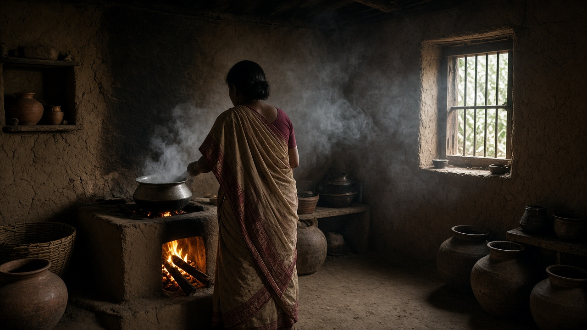
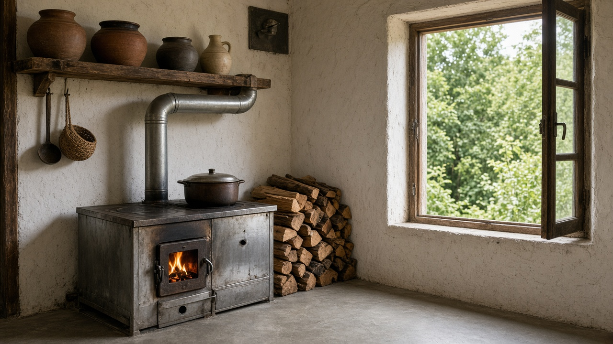
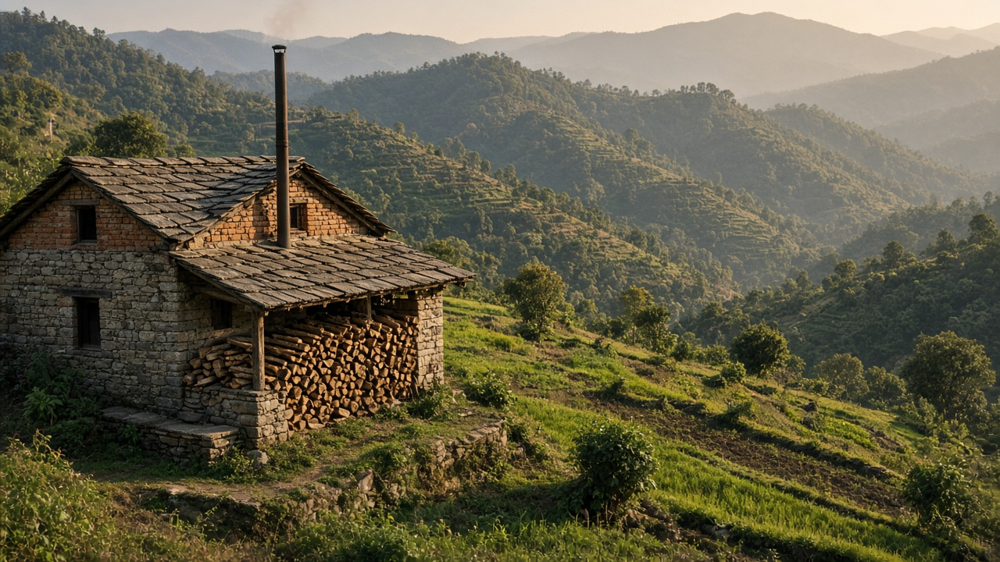

Household Air Pollution and Biomass Cooking
Published on August 20, 2026

Household air pollution kills more people than outdoor smog in many low- and middle-income countries, with solid fuel combustion for cooking and heating as the dominant source. Three billion people rely on wood, crop residues, charcoal, or dung burned in open fires, traditional stoves, or simple cookstoves without chimneys. Incomplete combustion releases PM2.5, carbon monoxide, benzene, formaldehyde, and polycyclic aromatic hydrocarbons directly into enclosed kitchen spaces. Women and young children who spend hours near cooking fires inhale concentrations many times higher than outdoor ambient levels, suffering disproportionate health burdens despite contributing least to emission decisions.
Acute exposure causes eye irritation, cough, and headaches, while chronic exposure increases risks of chronic obstructive pulmonary disease, lung cancer, cardiovascular disease, low birth weight, and childhood pneumonia. The Global Burden of Disease studies attribute hundreds of thousands of premature deaths annually in South Asia to household air pollution from biomass cooking. Interventions range from improved cookstoves with better combustion efficiency and chimneys to liquefied petroleum gas, biogas, electric induction, and solar cookers that eliminate smoke at the source. Transition success depends on fuel affordability, cultural acceptance of new cooking methods, reliable supply chains, and behavioral change supported by community health workers.
National clean cooking programs combine subsidies, microfinance, and performance standards to accelerate adoption of modern fuels and stoves. Nepal, India, and Bangladesh have expanded LPG access and promoted electric cooking in urban areas while targeting rural households with improved biomass stoves as interim solutions. Measuring real-world stove performance in field conditions reveals that laboratory-tested efficiency gains often diminish with improper use and poor maintenance. Integrating household energy policy with forest conservation, gender equity, and climate mitigation creates co-benefits: reducing black carbon slows regional warming and glacier melt while improving indoor air quality protects the most vulnerable family members who deserve clean air in the rooms where they live.

घरपरिवारको वायु प्रदूषणले धेरै निम्न र मध्यम आय वाला देशमा बाहिरी स्मगभन्दा बढी मानिसको ज्यान लिन्छ, जसमा पकाउने र तताउनेका लागि ठोस इन्धन दहन प्रमुख स्रोत हो। तीन अरब मानिस काठ, बाली अवशेष, कोइला वा गोबर खुला आगो, परम्परागत चुलो वा साधारण चुलोमा जलाउँछन्। अपूर्ण दहनले PM2.5, कार्बन मोनोअक्साइड, बेन्जिन, फर्माल्डिहाइड र बहुचक्रीय सुगन्धित हाइड्रोकार्बन भित्रको भान्छामा उत्सर्जन गर्छ। पकाउने आगो नजिक घण्टौं बिताउने महिला र बालबालिकाले बाहिरी वातावरणीय स्तरभन्दा धेरै गुणा बढी सांद्रताको हावा श्वास लिन्छन्, उत्सर्जन निर्णयमा सबैभन्दा कम योगदान गर्दा पनि असमान स्वास्थ्य भार बोक्छन्।
तत्काल संपर्कले आँखा चिँचो, खोकी र टाउको दुखाइ ल्याउँछ, दीर्घकालीनले फोक्सोको रोग, फोक्सो क्यान्सर, मुटु रोग, कम तौलमा जन्म र बालबालिकाको निमोनिया बढाउँछ। विश्व रोग भार अध्ययनले दक्षिण एसियामा जैविक इन्धन पकाउँदा वार्षिक लाखौं असमय मृत्यु हुन्छ भनी देखाउँछ। उपायमा सुधारिएको चुलो, तरल पेट्रोलियम ग्याँस, बायोग्याँस, विद्युतीय इन्डक्सन र सोलार चुलो समावेश छ, जसले स्रोतमै धुवाँ हटाउँछ। स्वच्छ पकाउने संक्रमण इन्धनको सस्तोपन, नयाँ पकाउने विधिको सांस्कृतिक स्वीकृति, भरपर्दो आपूर्ति श्रृंखला र समुदाय स्वास्थ्यकर्मीले समर्थित व्यवहार परिवर्तनमा निर्भर छ।
राष्ट्रिय स्वच्छ पकाउने कार्यक्रमले अनुदान, सूक्ष्म वित्त र कार्यसम्पादन मापदण्ड मिलाएर आधुनिक इन्धन र चुलो अपनाउन तीव्रता दिन्छ। नेपाल, भारत र बंगलादेशले शहरी क्षेत्रमा तरल पेट्रोलियम ग्याँस पहुँच र विद्युतीय पकाउने विस्तार गर्दै ग्रामीण परिवारलाई अन्तरिम समाधानका रूपमा सुधारिएका जैविक इन्धन चुलो दिएका छन्। वास्तविक अवस्थामा चुलो माप्दा प्रयोगशालामा देखिएको दक्षता खराब प्रयोग र मर्मत कमजोर हुँदा घट्ने पाइन्छ। घर उर्जा नीतिलाई वन संरक्षण, लिङ्ग समानता र जलवायु न्यूनीकरणसँग जोड्दा सहलाभ हुन्छ: कालो कार्बन घटाउँदा क्षेत्रीय ताप र हिमनदी पग्लन मन्द हुन्छ, भित्री वायु सुधारले सबैभन्दा कमजोर परिवारका सदस्यलाई बस्ने कोठामा स्वच्छ हावा पाउने अधिकार सुरक्षित गर्छ।

घरेलू वायु प्रदूषण कई निम्न और मध्यम आय वाले देशों में बाहरी स्मग से अधिक लोगों की जान लेता है, जिसमें पकाने और गर्म करने के लिए ठोस ईंधन दहन प्रमुख स्रोत है। तीन अरब लोग लकड़ी, फसल अवशेष, कोयला या गोबर खुली आग, पारंपरिक चूल्हे या साधारण चूल्हे में जलाते हैं। अपूर्ण दहन PM2.5, कार्बन मोनोऑक्साइड, बेंजीन, फॉर्मल्डिहाइड और बहुचक्रीय सुगंधित हाइड्रोकार्बन भीतरी रसोई में उत्सर्जित करता है। चूल्हे के पास घंटों बिताने वाली महिलाएँ और छोटे बच्चे बाहरी स्तर से कई गुना अधिक संपर्क में रहते हैं, उत्सर्जन निर्णय में सबसे कम योगदान के बावजूद असमान स्वास्थ्य बोझ झेलते हैं।
तत्काल संपर्क से आँख जलन, खाँसी और सिरदर्द होता है, दीर्घकालीन से फेफड़े का रोग, फेफड़े का कैंसर, हृदय रोग, कम जन्म वजन और बच्चों में निमोनिया बढ़ता है। वैश्विक रोग बोझ अध्ययन दक्षिण एशिया में जैविक ईंधन से पकाने से हर साल लाखों असमय मृत्यु दर्शाते हैं। हस्तक्षेपों में सुधारित चूल्हे, तरलीकृत पेट्रोलियम गैस, बायोगैस, विद्युत इंडक्शन और सौर चूल्हे शामिल हैं, जो स्रोत पर धुआँ समाप्त करते हैं। स्वच्छ पकाने के संक्रमण की सफलता ईंधन की सस्ती उपलब्धता, नई पकाने की विधियों की सांस्कृतिक स्वीकृति, विश्वसनीय आपूर्ति श्रृंखला और समुदाय स्वास्थ्य कार्यकर्ताओं द्वारा समर्थित व्यवहार परिवर्तन पर निर्भर है।
राष्ट्रीय स्वच्छ पकाने के कार्यक्रम अनुदान, सूक्ष्म वित्त और प्रदर्शन मानकों को मिलाकर आधुनिक ईंधन और चूल्हे अपनाने को तेज़ करते हैं। नेपाल, भारत और बांग्लादेश ने शहरी क्षेत्रों में तरलीकृत पेट्रोलियम गैस पहुँच और विद्युत पकाने का विस्तार किया है, जबकि ग्रामीण परिवारों को अंतरिम समाधान के रूप में सुधारित जैविक ईंधन चूल्हे दिए हैं। वास्तविक अवस्थाओं में चूल्हे का मापन दिखाता है कि प्रयोगशाला में परीक्षित दक्षता खराब उपयोग और कमज़ोर रखरखाव से अक्सर घट जाती है। घरेलू ऊर्जा नीति को वन संरक्षण, लैंगिक समानता और जलवायु शमन से जोड़ने पर सह-लाभ होते हैं: काले कार्बन को कम करने से क्षेत्रीय गर्मी और ग्लेशियर पग्लन धीमी होती है, भीतरी हवा सुधार सबसे कमज़ोर परिवार के सदस्यों को रहने वाले कमरों में स्वच्छ हवा का अधिकार सुरक्षित करता है।